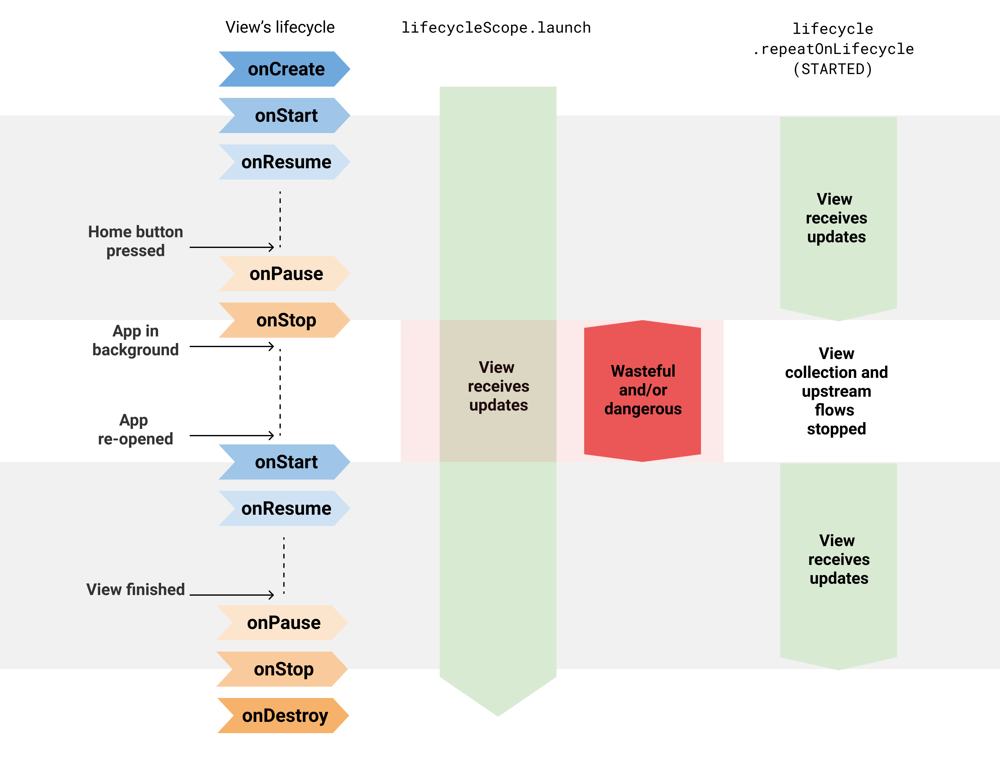

A safer way to collect flows from Android UIs
Learn how to use the Lifecycle.repeatOnLifecycle API to safely collect flows from the UI layer in Android.
In an Android app, Kotlin flows are typically collected from the UI layer to display data updates on the screen. However, you want to collect these flows making sure you’re not doing more work than necessary, wasting resources (both CPU and memory) or leaking data when the view goes to the background.
In this article, you’ll learn how the Lifecycle.repeatOnLifecycle, and Flow.flowWithLifecycle APIs protect you from wasting resources and why they’re a good default to use for flow collection in the UI layer.
Wasting resources
It’s recommended to expose the Flow<T> API from lower layers of your app hierarchy regardless of the flow producer implementation details. However, you should also collect them safely.
A cold flow backed by a channel or using operators with buffers such as buffer, conflate, flowOn, or shareIn is not safe to collect with some of the existing APIs such as CoroutineScope.launch, Flow<T>.launchIn, or LifecycleCoroutineScope.launchWhenX, unless you manually cancel the Job that started the coroutine when the activity goes to the background. These APIs will keep the underlying flow producer active while emitting items into the buffer in the background, and thus wasting resources.
Note: A cold flow is a type of flow that executes the producer block of code on-demand when a new subscriber collects.
For example, consider this flow that emits Location updates using callbackFlow:
// Implementation of a cold flow backed by a Channel that sends Location updates
fun FusedLocationProviderClient.locationFlow() = callbackFlow<Location> {
val callback = object : LocationCallback() {
override fun onLocationResult(result: LocationResult?) {
result ?: return
try { offer(result.lastLocation) } catch(e: Exception) {}
}
}
requestLocationUpdates(createLocationRequest(), callback, Looper.getMainLooper())
.addOnFailureListener { e ->
close(e) // in case of exception, close the Flow
}
// clean up when Flow collection ends
awaitClose {
removeLocationUpdates(callback)
}
}
Note: Internally,
callbackFlowuses a channel, which is conceptually very similar to a blocking queue, and has a default capacity of 64 elements.
Collecting this flow from the UI layer using any of the aforementioned APIs keeps the flow emitting locations even if the view is not displaying them in the UI! See the example below:
class LocationActivity : AppCompatActivity() {
override fun onCreate(savedInstanceState: Bundle?) {
super.onCreate(savedInstanceState)
// Collects from the flow when the View is at least STARTED and
// SUSPENDS the collection when the lifecycle is STOPPED.
// Collecting the flow cancels when the View is DESTROYED.
lifecycleScope.launchWhenStarted {
locationProvider.locationFlow().collect {
// New location! Update the map
}
}
// Same issue with:
// - lifecycleScope.launch { /* Collect from locationFlow() here */ }
// - locationProvider.locationFlow().onEach { /* ... */ }.launchIn(lifecycleScope)
}
}
lifecycleScope.launchWhenStarted suspends the execution of the coroutine. New locations are not processed, but the callbackFlow producer keeps sending locations nonetheless. Using the lifecycleScope.launch or launchIn APIs are even more dangerous as the view keeps consuming locations even if it’s in the background! Which could potentially make your app crash.
To solve this issue with these APIs, you’d need to manually cancel collection when the view goes to the background to cancel the callbackFlow and avoid the location provider emitting items and wasting resources. For example, you could do something like the following:
class LocationActivity : AppCompatActivity() {
// Coroutine listening for Locations
private var locationUpdatesJob: Job? = null
override fun onStart() {
super.onStart()
locationUpdatesJob = lifecycleScope.launch {
locationProvider.locationFlow().collect {
// New location! Update the map
}
}
}
override fun onStop() {
// Stop collecting when the View goes to the background
locationUpdatesJob?.cancel()
super.onStop()
}
}
That’s a good solution, but that’s boilerplate, friends! And if there’s a universal truth about Android developers, it’s that we absolutely detest writing boilerplate code. One of the biggest benefits of not having to write boilerplate code is that with less code, there are fewer chances of making a mistake!
Lifecycle.repeatOnLifecycle
Now that we all are on the same page and know where the problem lies, it’s time to come up with a solution. The solution needs to be 1) simple, 2) friendly or easy to remember/understand, and more importantly 3) safe! It should work for all use cases regardless of the flow implementation details.
Without further ado, the API you should use is Lifecycle.repeatOnLifecycle available in the lifecycle-runtime-ktx library.
Note: This API is available in the
lifecycle:lifecycle-runtime-ktx:2.4.0-alpha01library or later.
Take a look at the following code:
class LocationActivity : AppCompatActivity() {
override fun onCreate(savedInstanceState: Bundle?) {
super.onCreate(savedInstanceState)
// Create a new coroutine since repeatOnLifecycle is a suspend function
lifecycleScope.launch {
// The block passed to repeatOnLifecycle is executed when the lifecycle
// is at least STARTED and is cancelled when the lifecycle is STOPPED.
// It automatically restarts the block when the lifecycle is STARTED again.
lifecycle.repeatOnLifecycle(Lifecycle.State.STARTED) {
// Safely collect from locationFlow when the lifecycle is STARTED
// and stops collection when the lifecycle is STOPPED
locationProvider.locationFlow().collect {
// New location! Update the map
}
}
}
}
}
repeatOnLifecycle is a suspend function that takes a Lifecycle.State as a parameter that is used to automatically create and launch a new coroutine with the block passed to it when the lifecycle reaches that state, and cancel the ongoing coroutine when the lifecycle falls below the state.
This avoids any boilerplate code since the associated code to cancel the coroutine when it’s no longer needed is automatically done by repeatOnLifecycle. As you could guess, it’s recommended to call this API in the activity’s onCreate or fragment’s onViewCreated methods to avoid unexpected behaviors. See the example below using fragments:
class LocationFragment: Fragment() {
override fun onViewCreated(view: View, savedInstanceState: Bundle?) {
// ...
viewLifecycleOwner.lifecycleScope.launch {
viewLifecycleOwner.repeatOnLifecycle(Lifecycle.State.STARTED) {
locationProvider.locationFlow().collect {
// New location! Update the map
}
}
}
}
}
Important: Fragments should always use the viewLifecycleOwner to trigger UI updates. However, that’s not the case for DialogFragments which might not have a View sometimes. For DialogFragments, you can use the lifecycleOwner.
Note: This API is available in the
lifecycle:lifecycle-runtime-ktx:2.4.0-alpha01library or later.
Under the hood
repeatOnLifecycle suspends the calling coroutine, re-launches the block when the lifecycle moves in and out of the target state in a new coroutine, and resumes the calling coroutine when the Lifecycle is destroyed. This last point is very important: the coroutine that calls repeatOnLifecycle won’t resume executing until the lifecycle is destroyed.
class LocationActivity : AppCompatActivity() {
override fun onCreate(savedInstanceState: Bundle?) {
super.onCreate(savedInstanceState)
// Create a coroutine
lifecycleScope.launch {
lifecycle.repeatOnLifecycle(Lifecycle.State.RESUMED) {
// Repeat when the lifecycle is RESUMED, cancel when PAUSED
}
// `lifecycle` is DESTROYED when the coroutine resumes. repeatOnLifecycle
// suspends the execution of the coroutine until the lifecycle is DESTROYED.
}
}
}
Visual diagram
Circling back to the beginning, collecting locationFlow directly from a coroutine started with lifecycleScope.launch is dangerous since the collection keeps happening even when the View is in the background.
repeatOnLifecycle prevents you from wasting resources and app crashes because it stops and restarts the flow collection when the lifecycle moves in and out of the target state.
 Difference between using and not using the repeatOnLifecycle API.
Flow.flowWithLifecycle
You can also use the Flow.flowWithLifecycle operator when you have only one flow to collect. This API uses the Lifecycle.repeatOnLifecycle API under the hood, and emits items and cancels the underlying producer when the Lifecycle moves in and out of the target state.
class LocationActivity : AppCompatActivity() {
override fun onCreate(savedInstanceState: Bundle?) {
super.onCreate(savedInstanceState)
locationProvider.locationFlow()
.flowWithLifecycle(this, Lifecycle.State.STARTED)
.onEach {
// New location! Update the map
}
.launchIn(lifecycleScope)
}
}
Note: This API name takes the
Flow.flowOn(CoroutineContext)operator as a precedent sinceFlow.flowWithLifecyclechanges theCoroutineContextused to collect the upstream flow while leaving the downstream unaffected. Also, similar toflowOn,Flow.flowWithLifecycleadds a buffer in case the consumer doesn’t keep up with the producer. This is due to the fact that its implementation uses acallbackFlow.
Configuring the underlying producer
Even if you use these APIs, watch out for hot flows that could waste resources even if they aren’t collected by anyone! There are some valid use cases for them, but do keep that in mind and document it if needed. Having the underlying flow producer active in the background, even if wasting resources, can be beneficial for some use cases: you instantly have fresh data available rather than catching up and temporarily showing stale data. Depending on the use case, decide whether the producer needs to be always active or not.
The MutableStateFlow and MutableSharedFlow APIs expose a subscriptionCount field that you can use to stop the underlying producer when subscriptionCount is zero. By default, they will keep the producer active as long as the object that holds the flow instance is in memory. There are some valid use cases for this though, for example, a UiState exposed from the ViewModel to the UI using StateFlow. That’s ok! This use case demands the ViewModel to always provide the latest UI state to the View.
Similarly, the Flow.stateIn and Flow.shareIn operators can be configured with the sharing started policy for this. WhileSubscribed() will stop the underlying producer when there are no active observers! On the contrary, Eagerly or Lazily will keep the underlying producer active as long as the CoroutineScope they use is active.
Note: The APIs shown in this article are a good default to collect flows from the UI and should be used regardless of the flow implementation detail. These APIs do what they need to do: stop collecting if the UI isn’t visible on screen. It’s up to the flow implementation if it should be always active or not.
Safe Flow collection in Jetpack Compose
The Flow.collectAsState function is used in Compose to collect flows from composables and represent the values as State<T> to be able to update Compose UI. Even if Compose doesn’t recompose the UI when the host activity or fragment is in the background, the flow producer is still active and can waste resources. Compose can suffer from the same problem as the View system.
When collecting flows in Compose, use the Flow.flowWithLifecycle operator as follows:
@Composable
fun LocationScreen(locationFlow: Flow<Flow>) {
val lifecycleOwner = LocalLifecycleOwner.current
val locationFlowLifecycleAware = remember(locationFlow, lifecycleOwner) {
locationFlow.flowWithLifecycle(lifecycleOwner.lifecycle, Lifecycle.State.STARTED)
}
val location by locationFlowLifecycleAware.collectAsState()
// Current location, do something with it
}
Notice that you need to remember the flow that is aware of the lifecycle with locationFlow and lifecycleOwner as keys to always use the same flow unless one of the keys change.
In Compose, side effects must be performed in a controlled environment. For that, use LaunchedEffect to create a coroutine that follows the composable’s lifecycle. In its block, you could call the suspend Lifecycle.repeatOnLifecycle if you need it to re-launch a block of code when the host lifecycle is in a certain State.
Comparison with LiveData
You might’ve noticed that this API behaves similarly to LiveData, and that’s true! LiveData is aware of Lifecycle, and its restarting behavior makes it ideal for observing streams of data from the UI. And that’s also the case for the Lifecycle.repeatOnLifecycle, and Flow.flowWithLifecycle APIs!
Collecting flows using these APIs is a natural replacement for LiveData in Kotlin-only apps. If you use these APIs for flow collection, LiveData doesn’t offer any benefits over coroutines and flow. Even more, flows are more flexible since they can be collected from any Dispatcher and they can be powered with all its operators. As opposed to LiveData, which has limited operators available and whose values are always observed from the UI thread.
StateFlow support in data binding
On a different note, one of the reasons you might be using LiveData is because it’s supported by data binding. Well, so is StateFlow! For more information about StateFlow support in data binding, check out the official documentation.
Use the Lifecycle.repeatOnLifecycle or Flow.flowWithLifecycle APIs to safely collect flows from the UI layer in Android.